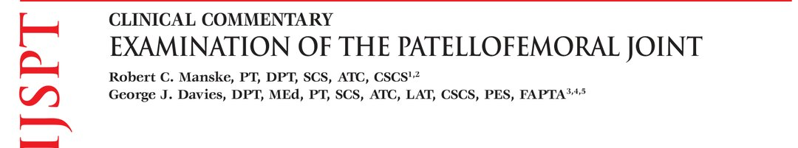
🔖原文首页（IJSPT 2016 年第 11 卷第 6 期）
📚 文献卡片
▪ 英文原题：Examination of the Patellofemoral Joint（髌股关节的检查）
▪ 作者：Robert C. Manske, PT, DPT, SCS, ATC, CSCS · George J. Davies, DPT, MEd, PT, SCS, ATC, LAT, CSCS, PES, FAPTA
▪ 机构：威奇托州立大学；Via Christi Health；阿姆斯特朗州立大学；Coastal Therapy；Gundersen Health Systems（美国）
▪ 期刊：International Journal of Sports Physical Therapy（IJSPT）
▪ 年卷期：2016;11(6):831-853
▪ PMCID：PMC5095938
▪ 文章类型：临床评论（Clinical Commentary）
▪ 关键词：patellofemoral assessment · clinical reasoning · evaluation
髌股疼痛综合征（PFPS）是门诊膝痛最常见的诊断之一，发病率 15%～25%，占运动相关膝伤的 25%。髌股关节看似简单，实际影响因素很多：内在与外在、收缩与非收缩组织，还受髋、足等远处结构影响。
查体发现与症状不一定对应，也没有单一的确诊试验。作者给出一套按体位顺序进行的系统查体流程：病史 → 站立 → 动态 → 坐位 → 仰卧 → 侧卧 → 俯卧 → 功能测试，适合学生和新手，也可供有经验者复习。
| 体位/环节 | 主要内容 |
|---|---|
| 病史 | 起病、机制、部位、性质、加重/缓解因素；排除红旗征；区分压迫、不稳、生物力学、创伤、软组织、过用、剥脱性骨软骨炎、神经性等 |
| 站立 | 额状面（内外翻、足）、水平面（股骨旋转、骨盆、萎缩）、矢状面（膝反张、屈曲挛缩、高位/低位髌骨）；Q 角、腿长、足姿 |
| 动态 | 下台阶测试、侧向下台阶测试、单腿蹲、步态、Beighton 全身松弛评分 |
| 坐位 | 胫骨结节沟角、被动/主动髌骨轨迹、力量测试 |
| 仰卧 | 相关关节筛查、触诊、神经与平衡、关节活动度、柔韧性、积液、髌骨滑动/恐惧/倾斜试验、韧带和半月板筛查 |
| 侧卧 | Ober 试验、髋外展/内收力量 |
| 俯卧 | Ely 试验、髋伸/膝屈力量、等速测试 |
| 功能测试 | 双腿跳 → 单腿跳 → 下肢功能测试（LEFT）→ 专项测试；影像和 Kujala 评分 |
一句话概括：先听病史，再按站→坐→躺→侧→趴的顺序查，近端髋和远端足都要看，最后用功能测试决定能否回到运动。
• 病史是检查的基石，仔细听，患者常常会“说出”自己的诊断
• 了解起病、机制、部位、性质、不同情况下的严重程度、加重和缓解因素
• 先排除红旗/黄旗征（体重下降、食欲差、红斑、异常肿块等），可疑时转诊
• 了解日常、职业、娱乐和运动活动；了解既往手术及术前症状
| 类型 | 典型表现 |
|---|---|
| 压迫性问题 | 长时间屈膝（看电影、长途坐车/飞机）后酸痛加重；深蹲、楼梯诱发。较轻时只有下楼痛——下楼需股四头肌离心收缩，髌骨后关节面压力更大（图1） |
| 不稳 | 膝“打滑”“打软”；不一定是明显脱位，常为细微的微创伤 |
| 生物力学问题 | 膝外翻、髋内收、胫骨外展或足旋前增加，表现为膝前弥漫痛；可见“悲惨排列综合征”（股骨内旋、胫骨外旋、足旋前） |
| 髌骨直接创伤 | 骨折、骨折脱位、合并软骨损伤；急性者考虑挫伤或髌骨脱位（摔倒膝着地，或落地变向时外翻力导致外侧半脱位/脱位） |
| 软组织病变 | 滑膜皱襞综合征、脂肪垫综合征（Hoffa 综合征）、滑囊炎；酸痛或锐痛 |
| 过用 | 肌腱或骨骺病变，活动、急停急起、跳跃加重；青少年快速生长期常见 Sinding-Larsen-Johansson 综合征；可表现为“慢性病急性发作” |
| 剥脱性骨软骨炎（OCD） | 髌骨后方深处痛；髌骨脱位常合并 OCD；间歇性积液和负重痛需影像排除 |
| 复杂区域疼痛综合征 | 多由创伤或手术诱发，疼痛反应夸大 |
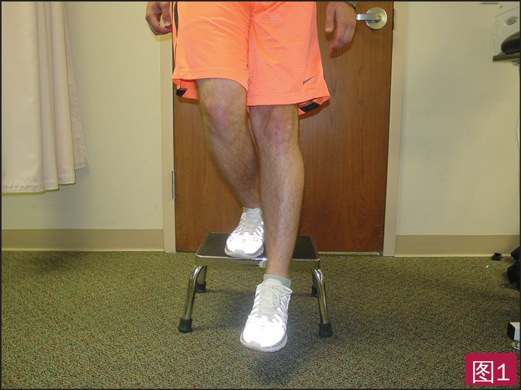
🔖图1：下台阶时股四头肌离心收缩，增加髌骨后关节面软骨的压力，可诱发髌骨痛
表1 膝前痛的部位与可能原因
| 疼痛部位 | 可能原因 |
|---|---|
| 外侧 | 外侧支持带小神经（支持带神经瘤）、髂胫束综合征、腘肌腱炎 |
| 内侧 | 内侧支持带反复牵拉、内侧髌股韧带、滑膜皱襞综合征、支持带神经瘤 |
| 髌后 | 关节软骨损伤、软骨下骨应力、剥脱性骨软骨炎、骨挫伤 |
| 上方 | 股四头肌腱炎/腱病 |
| 下方 | 髌腱炎/腱病、脂肪垫综合征（Hoffa 综合征）、Sinding-Larsen-Johansson 综合征 |
双膝甚至整个下肢都应暴露；先查健侧，建立该患者的“正常”基线。先观察畸形、变色、肿胀、瘢痕、瘀斑、积液。检查顺序：站立 → 坐位 → 仰卧。
• 前/后面观（额状面）：膝内外翻（图2）；股骨颈干角正常约 125°，减小（髋内翻）→ 膝外翻，增大（髋外翻）→ 膝内翻；确认不是股骨旋转或足旋前造成的；看髌骨朝向、“刺刀征”、胫骨外旋和胫骨内翻；前面看前足和中足（舟骨下降、Feiss 线、内侧纵弓角），后面看距下关节（图3）
• 侧面观（矢状面）：膝反张（可致脂肪垫撞击、Hoffa 综合征；股四头肌无力或抑制也可表现为膝过伸）或屈曲挛缩（股四头肌过用）；高位/低位髌骨；“骆驼征”（图4）
• 前面观（水平面）：股骨旋转——前倾增大使髌骨内旋，前倾减小使髌骨外旋；触诊髂嵴、髂前上棘、髂前下棘、髂后上棘看骨盆是否对称；观察股四头肌及小腿萎缩
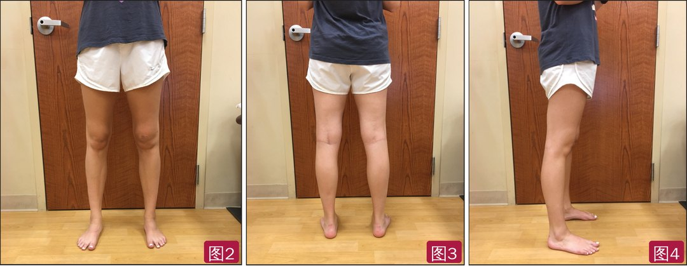
🔖图2：前面观，评估膝内外翻、髋内外翻和髌骨位置；图3：后面观，评估膝内外翻及前足、中足、距下关节位置；图4：侧面观，评估膝反张、屈曲挛缩和高位/低位髌骨
• “外翻定律”：髌骨在动态活动中有向外移动的天然趋势
• Q 角：髂前上棘—髌骨中点连线与胫骨结节—髌骨中点连线延长线的夹角；Q 角越大，向外的分力可能越大
• 女性 15°～18°，男性约 12°，或可部分解释女性髌股痛更多
• 但测量方法差异大（仰卧/站立、收缩/放松），临床价值不被支持；荟萃分析显示 Q 角本身不是髌股痛的危险因素，可能只在部分亚群中有意义；而且它是用静态测量推测动态功能
• 腿长差会改变步态对称性和关节力学
• 站立触诊双侧髂嵴高度（图5）：高侧可能腿长、低侧可能腿短；长腿可能以足旋前代偿，短腿以旋后代偿
• 站立用软尺量髂前上棘到内踝（图6），差 >1.5 cm 可能有病理意义；作者建议负重位测量，以免漏掉单侧膝反张或足旋前等代偿
• 仰卧测量：差 1.0～1.5 cm 可视为正常；可分段测量（髂嵴—大转子、大转子—外侧关节线、内侧关节线—内踝）找出差在哪一段；俯卧屈膝 90° 比较足跟高度（胫骨长度）；仰卧屈髋 45° 比较膝高（股骨长度）
• Weber-Barstow 法：仰卧屈髋 45°，抬臀后放下，被动伸直下肢，比较双侧内踝位置；可仰卧（图7a）或长坐位（图7b）
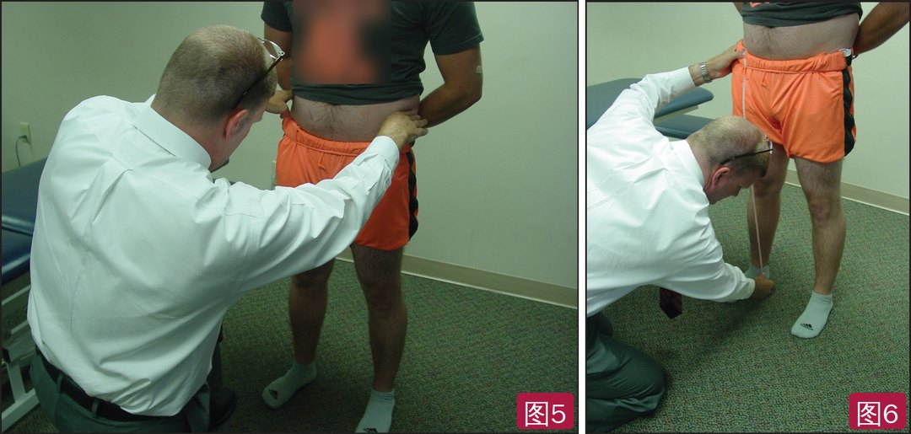
🔖图5：触诊髂嵴判断骨盆高度，高侧可能腿较长；图6：站立用软尺从髂前上棘量到内踝，双侧差 >1.5 cm 被认为有病理意义
• 放松站立（图8）和走跑中观察过度旋前：扁平足、内侧纵弓塌陷、后足外翻；足跟位置检查的组内、组间 ICC 为 0.68～0.91
• 扁平足分僵硬型（先天）和柔软型（获得性）：踮脚时足弓出现为柔软型，不出现为僵硬型
• 距下关节中立位：手指触距骨头内侧、拇指触距骨穹顶外侧，让患者左右转躯干，找到两侧都不突出的中立位（图9），量舟骨到地面高度；再放松站立测一次，二者之差即舟骨下降，≤10 mm 为正常
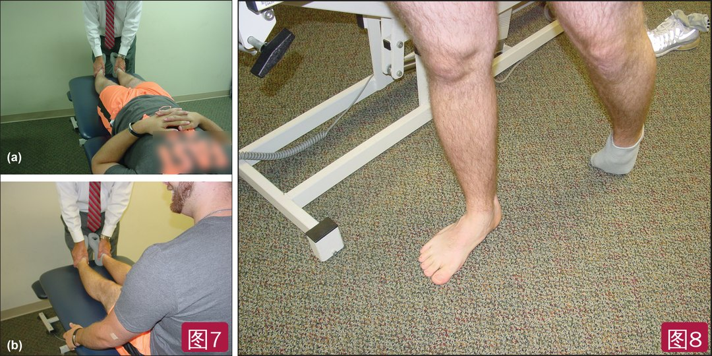
🔖图7：Weber-Barstow 法比较内踝位置——仰卧（a）和长坐位（b）；图8：放松站立时内侧纵弓塌陷，提示过度旋前
放松站立和步态中未必能看出问题，需要用要求更高的动作来检查。
• 站在 20 cm 台阶上，双臂交叉抱胸，单腿缓慢下蹲直到足跟触地再回到起始，约每 2 秒 1 次，连续 5～10 次（图10）
• Crossley：5 项中 4 项无偏差为“好”；表现差者臀中肌前部激活更晚，髋外展力矩低 29%，侧向躯干力量低 23%；组间和组内信度 κ 均为 0.80
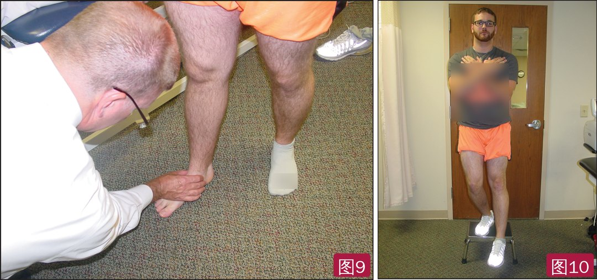
🔖图9：负重功能位评估距下关节——手指触距骨头内侧、拇指触距骨穹顶外侧；图10：下台阶测试，双臂交叉抱胸，缓慢下降直到足跟触地
表2 下台阶测试中可见的异常
| 整体印象 | 躯干 | 骨盆 | 髋 | 膝 |
|---|---|---|---|---|
| • 保持平衡 • 晃动 • 下蹲深度 • 下蹲速度 | • 侧移 • 旋转 • 侧屈 • 前屈 | • 外旋 • 旋转 • 倾斜 | • 内收 • 内旋 | • 外翻 • 内翻 • 相对足的位置 |
• 患腿站在 15 cm 台阶上（大多数人需屈膝约 60°），向侧方下蹲用健侧足跟触地再回到起始，按表 3 评分
• Rabin：0～1 分为好，≥2 分为中等；中等者踝背屈受限、髋外旋和伸膝力量较低
表3 侧向下台阶测试评分
| 项目 | 表现 | 得分 |
|---|---|---|
| 手臂策略 | 手离开腰部 | 1 |
| 躯干排列 | 向任何方向倾斜 | 1 |
| 骨盆平面 | 失去水平 | 1 |
| 膝姿势 | 胫骨结节偏到第二趾内侧 胫骨结节偏到足内缘内侧 | 1 2 |
| 稳定 | 非测试腿踩地，或左右晃动 | 1 |
• Nunes 等：下蹲诱发膝前痛是髌股痛最好的单一试验，阳性者 80% 有髌股痛
• 单腿蹲（图11）比双腿蹲要求更高，支撑面小，更易诱发膝外翻等代偿
• Nakagawa：髌股痛患者单腿蹲时同侧躯干侧倾（图12）、对侧骨盆下沉（图13）、髋内收和膝外展（图14）更多，与髋外展肌和外旋肌离心力量下降有关
• 闭链和开链运动中触诊髌骨摩擦音，可能提示软骨损伤；若摩擦音与症状出现的角度一致，有助于设计训练；负重位触诊髌周软组织可诱发非负重位没有的症状
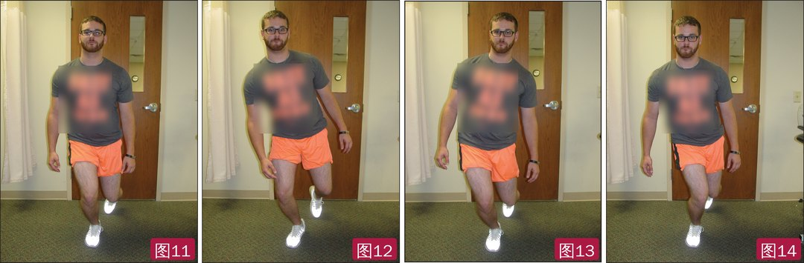
🔖图11：单腿蹲动作正确、控制良好；图12：代偿性同侧躯干侧倾增加；图13：代偿性对侧骨盆下沉增加；图14：代偿性髋内收和膝外展（T 恤上的英文已模糊处理）
• 患者进门时就开始观察；正式步态评估要穿日常运动鞋或工作鞋（如钢头鞋），检查矫形鞋垫是否仍有效；最好也赤足观察足的真实力学
• 从前、后、侧面观察；跑步机上观察更一致，在诊室来回走时距离变化会影响观察
• 跑者需在不同跑步条件下评估；可用手机视频 App 让患者看到自己的走跑力学
表4 Beighton 关节松弛评分
| 项目 | 得分 |
|---|---|
| 拇指能被动扳到前臂桡侧 | 每侧 1 分 |
| 小指能背伸超过 90° | 每侧 1 分 |
| 膝过伸超过 0° | 每侧 1 分 |
| 肘过伸超过 0° | 每侧 1 分 |
| 伸膝站立弯腰，手掌能平放地面 | 1 分 |
| 满分 | 9 分 |
• 多数资料以 ≥4 分为全身关节松弛
• Sendur 等：关节松弛者 Q 角明显更大，人群中松弛发生率 29.25%
• Quatman 等：青春期后女性全身松弛度可能大于男性，青春期前两性相近；因此 Q 角大者或处于生长期的女性应检查全身松弛
• 胫骨结节沟角：坐在床边屈膝 90°，从髌骨中心到胫骨结节中心画竖线，再经股骨髁画横线；反映胫骨结节相对股骨滑车的外移。正常值有争议：Hughston 认为 0°，Kolowich 认为上限 10°
• 被动/主动髌骨轨迹：患者后仰、双手撑床（三脚架姿势），放松腘绳肌；治疗师被动把膝从屈 90° 伸到完全伸直（图15a），正常髌骨轻微内移后回到中立，或基本走直线；被动测试评估骨性和非收缩组织——滑动过多提示浅层支持带紧张，倾斜过多提示深层支持带紧张
• 再让患者主动伸膝（图15b），重点看屈 20°～30° 到完全伸直（半脱位多发生在此范围）；接近完全伸直时突然外移（外侧 J 征）可能提示股内侧斜肌动态内侧稳定不足
• 力量测试：Nicholas 提出“区域相互依赖”和全下肢力量概念，部分髌股痛患者有髋近端无力；Pappas 等发现屈膝和髋外展力量下降与髌股痛有关；Boling 等发现伸膝等长力量下降可预测髌股痛
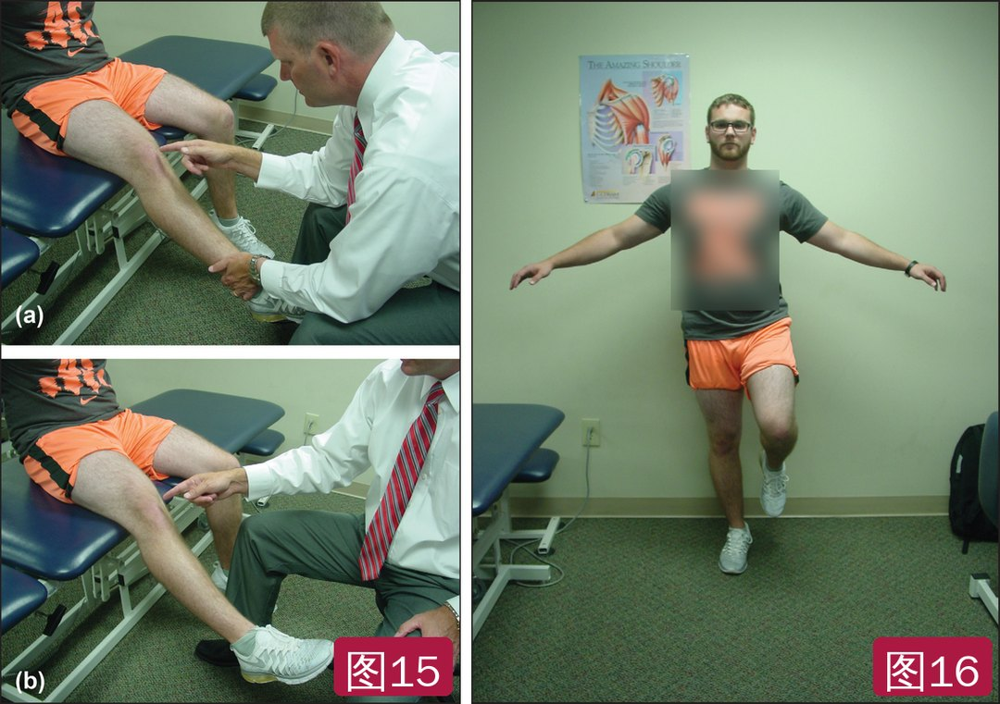
🔖图15：被动（a）和主动（b）髌骨轨迹检查；图16：站立“鹤立”试验评估静态平衡（T 恤上的英文已模糊处理）
• 相关关节：筛查腰椎、骶髂关节、髋、近端胫腓关节、踝和距下关节（主动、被动、抗阻活动或特殊试验）
• 触诊：髌股痛患者触诊更敏感，医生描绘的疼痛区包含了患者自述区的 85%；髌骨边缘压痛见于 71%～75% 的患者。按表 5 系统、双侧触诊，注意疼痛、温度、积液、水肿、组织增厚和结节
• 神经检查：皮节感觉、反射、平衡和本体感觉；至少做简单的鹤立试验（图16），很多膝病患者有平衡缺陷；本体感觉可用开链和闭链位关节角度复位测试
• 关节活动度：膝常记作 10-0-135°（过伸—中立—屈曲），同时测髋、踝和距下关节；被动活动度总大于主动，注意终末感
表5 膝部系统触诊的骨性和软组织结构
| 骨性 | 肌肉 | 其他 |
|---|---|---|
| • 髌骨 • 下极 • 上极 • 胫骨结节 • 内收肌结节 • 股骨内侧髁 • 胫骨内侧平台 • 股骨外侧髁 • 外侧滑车嵴 • 胫骨外侧平台 • 髌骨关节面 • 胫股关节线 • 腓骨头 • Gerdy 结节 | • 股内侧肌 • 股外侧肌 • 股直肌 • 股二头肌 • 半腱肌 • 半膜肌 • 股薄肌 • 缝匠肌 • 阔筋膜张肌 • 髂胫束 • 内收肌群 • 腘肌腱止点 • 腓肠肌 | • 髌腱 • 股四头肌腱 • 髌骨支持带 • 内侧髌股韧带 • 膝部滑囊 • 滑膜皱襞 • 内侧副韧带 • 外侧副韧带 • 上方关节囊 • 髂胫束 |
• 腘绳肌 90/90 主动直腿抬高：仰卧双髋屈 90°，双手抱住大腿后侧保持竖直，主动伸膝；正常腘窝角约 160°（距完全伸直 20°）（图17）
• 坐位腘绳肌测试：双腿伸直或一侧屈膝抵胸，弯腰去够伸直腿的脚趾，够不到提示腘绳肌紧张（图18）
• Thomas 试验：屈对侧膝髋使腰椎前凸变平，观察测试侧；大腿抬离床面为屈髋肌紧张，大腿被拉向外展提示髂胫束紧张；在床尾做时，若股直肌挛缩，膝会轻度伸直，被动屈膝时大腿随之屈曲
• 腓肠肌/比目鱼肌：伸膝位背屈测腓肠肌，屈膝位背屈测比目鱼肌
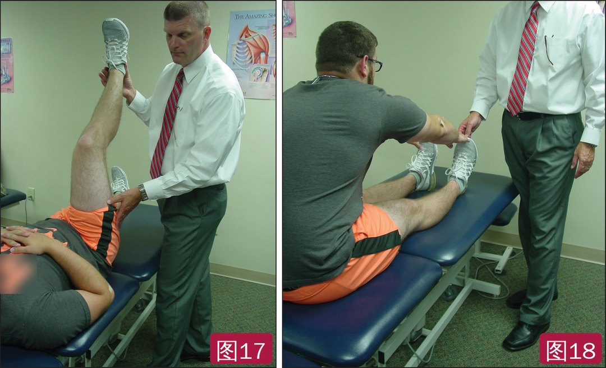
🔖图17：90/90 直腿抬高测试腘绳肌柔韧性；图18：坐位腘绳肌柔韧性测试（T 恤上的英文已模糊处理）
• 髌股关节受累常引起浆液血性滑膜炎，先查积液（关节内）与水肿、滑囊炎、血肿（关节外）：挤压、推扫、浮髌试验
• 被动髌骨滑动：作者偏好在屈膝 30°（垫毛巾卷）检查——髌骨开始进入滑车，既能感到软组织阻力，也能感到骨性嵌合，且是最常发生脱位的角度。患者必须完全放松，轻微保护性收缩都会减少活动度
• 从外侧用拇指向内推（图19）评估外侧浅层支持带；再到内侧向外推（即 Fairbank 征/恐惧试验，应放在内推之后）；全程保持髌骨倾斜不变，否则旋转会被误认为平移
• 把髌骨纵向分为 4 个象限估计移动量。Kolowich（屈 20°～30°）：内移 <1 个象限为活动度不足，3～4 个象限为过度活动，2 个象限正常；还可做上、下滑动（图20、21）
• 动态髌骨恐惧试验：仰卧，大腿在床上、小腿伸直悬空，拇指把髌骨推向外侧，同时屈膝到 90° 再伸直，出现不稳症状为阳性；再把髌骨推向内侧重复，若无症状，支持外侧不稳（图22）
• 外侧不稳多因内侧髌股韧带（提供 23%～80% 外侧静态约束）和内侧髌半月板韧带（22%）撕裂
• 内侧不稳（反向恐惧）少见，多见于髌骨力线手术后（胫骨结节移位过度、外侧松解切断股外侧肌、MPFL 移植物过紧/位置不当）；患者感觉髌骨“向外滑”，实为内侧半脱位的髌骨在早期屈膝时猛然滑回滑车。内侧半脱位试验：伸膝位向内推髌骨，屈膝 30° 内出现症状为阳性
• 重力半脱位试验：侧卧、患腿外展悬空，收缩股四头肌不能把半脱位的髌骨拉回滑车为阳性，提示外侧支持带松弛和/或股外侧肌与髌骨分离
• 髌骨倾斜试验：伸膝位（屈 30°～40° 时深层支持带太紧，无法倾斜），在外侧压髌骨内缘、拇指托起外缘，看能否倾回中立（图23）；不能则提示外侧过紧、可能有外侧高压综合征；正常内外倾约 15°，一定要和健侧比较
• Clarke“髌骨研磨”试验：压住髌骨让患者收缩股四头肌；研究显示研磨和恐惧试验敏感度低、诊断准确性有限，假阳性多且可能加重症状，作者建议不用
• 韧带筛查：前抽屉和 Lachman（ACL）、后抽屉和 Clancy 上台阶（PCL）、屈 70° 旋转不稳试验、0° 和 30° 外翻/内翻应力（MCL/LCL）；“没有一个试验是最好的”
• 半月板筛查：McMurray 和动态 McMurray，排除合并问题
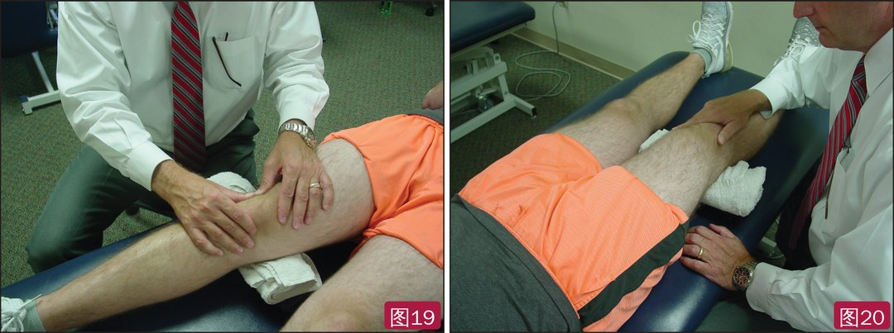
🔖图19：屈膝 30° 检查髌骨内移，评估外侧浅层支持带活动受限；图20：屈膝 30° 检查髌骨上移，评估髌腱及下方软组织
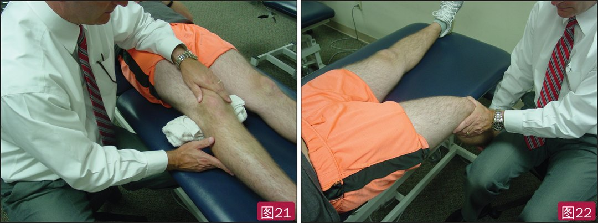
🔖图21：屈膝 30° 检查髌骨下移，评估股四头肌腱及其他股四头肌；图22：动态髌骨恐惧试验——外推髌骨同时由伸到屈，出现不稳症状为阳性
• Ober 试验/改良 Ober 试验（侧卧）：下方腿稍屈稳住，上方腿被动外展后伸（伸膝或屈膝），缓慢放下，大腿停在水平以上提示髂胫束/阔筋膜张肌紧张；伸膝位对髂胫束牵拉更大
• 髋外展/内收力量（侧卧）：阻力放在膝上方大腿远端，复测时位置保持一致以保证力臂相同
• Ely 试验（俯卧）：髋中立或伸展位屈膝，股直肌紧张时会出现屈髋代偿（图24）；俯卧也可测髋旋转
• 髋伸/膝屈力量（俯卧）：伸膝测试同时包含腘绳肌，屈膝时只测髋伸肌；旋转小腿可偏重内侧或外侧腘绳肌
• 等速测试：无禁忌且有设备时做开链等速测试，可做双侧比较、单侧比值、按体型标准化和功率指标（很多膝病患者股四头肌明显无力）
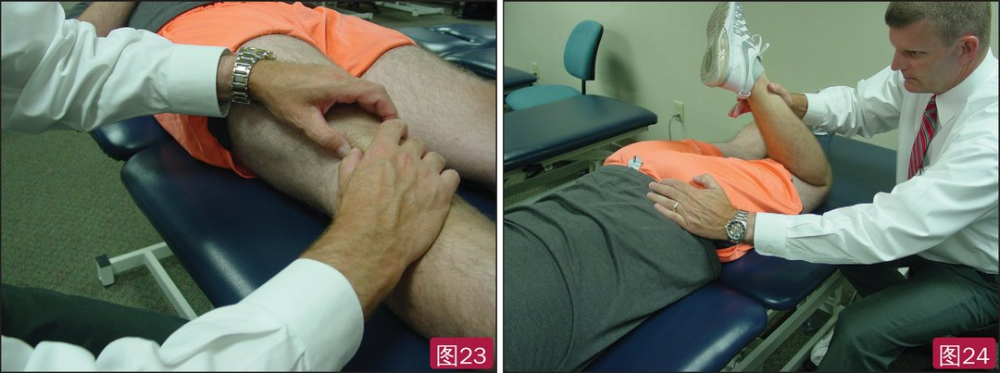
🔖图23：髌骨倾斜试验评估深层支持带，若不能倾回中立提示外侧深层结构紧张；图24：俯卧 Ely 试验评估股直肌柔韧性
• 按活动水平分层，先满足力量、柔韧性和活动度等基本标准，再按顺序做：双腿跳 → 单腿跳 → 下肢功能测试（LEFT）→ 专项功能测试
• 每项测试前做 25%、50%、75%、100% 四级用力热身，既是安全筛查，也提高测试信度
• 双腿跳：训练向心蹬伸，更重要的是离心减速落地；按身高做异速标准化
• 单腿跳：IKDC 推荐的功能测试，有单次跳、三级跳、计时跳、交叉跳等；也是让患者敢于患侧离心落地的心理测试；看两侧对称性并按身高标准化
• LEFT：多方向、含减速、并加入疲劳因素。ACL 重建后未疲劳时单腿跳 100% 通过，疲劳后约 70% 不通过
• 影像：正位、侧位、下肢全长站立位、Insall-Salvati、Merchant 和/或日出位；必要时 MRI 看软骨和软组织（皱襞、Hoffa、支持带神经瘤等）
• 患者报告结局：作者使用 Kujala 前膝痛量表，信度、内部一致性和效度良好
表6 功能测试的参考常模
| 测试 | 男性绝对值 | 男性按身高标准化 | 女性绝对值 | 女性按身高标准化 |
|---|---|---|---|---|
| 双腿跳 | 按运动专项常模 | 身高的 100% ± 10% | 按运动专项常模 | 身高的 90% ± 10% |
| 单腿跳 | 肢体对称指数（相差 10% 以内） | 身高的 90% ± 10% | 肢体对称指数（相差 10% 以内） | 身高的 80% ± 10% |
| LEFT | 平均 100 秒（90～125 秒） | 不适用 | 平均 135 秒（120～150 秒） | 不适用 |
• 性质：临床评论，流程主要来自作者经验和文献，没有验证这套查体流程的诊断准确性或对结局的影响
• 亮点：体位顺序清楚、项目全面，并明确指出 Q 角、Clarke 研磨试验等的局限，适合作为教学和临床查体清单
• 部分测试证据有限：很多特殊检查（髌骨滑动、倾斜、沟角等）信效度一般、正常值有争议；表 6 常模来源和适用人群未详细说明
• 前后不一致：下台阶测试正文写 20 cm，侧向下台阶写 15 cm（两项测试不同，需注意区分）；水平面部分“股骨前倾增大使髌骨内旋，前倾增大使髌骨外旋”两处都写“增大”，后者应为“减小”（本文已按解剖改正）；Kolowich 的髌骨滑动测试正文写“屈 20°～30°”，作者偏好 30°
• 原文小瑕疵：Sinding-Larsen-Johansson 拼成 Sindig-LarsenJohannsen；“fat pat syndrome”“dessicans”“Semimemebranosis”“Gracillis”等拼写错误；Thomas 试验“120 of hip flexion”缺单位
① 病史：部位（表 1）+ 性质（压迫/不稳/力学/创伤/软组织/过用/OCD），排除红旗征
② 站立：三平面力线、骨盆与腿长（>1.5 cm）、足姿与舟骨下降（≤10 mm 正常）；Q 角参考价值有限
③ 动态：下台阶、侧向下台阶（0～1 好，≥2 中等）、单腿蹲（下蹲痛阳性者 80% 为髌股痛）、步态、Beighton ≥4
④ 坐位：沟角、被动/主动髌骨轨迹（J 征）、力量
⑤ 仰卧/侧卧/俯卧：触诊、柔韧性、积液、髌骨滑动（2 个象限正常）、恐惧和倾斜试验、韧带半月板筛查；不做 Clarke 试验
⑥ 功能：双腿跳 → 单腿跳 → LEFT（要加疲劳）→ 专项；Kujala 评分跟踪
欢迎关注悦美力公众号，获取更多物理治疗的专业知识！
📄参考文献：
Manske RC, Davies GJ. Examination of the Patellofemoral Joint. Int J Sports Phys Ther. 2016;11(6):831-853. PMCID: PMC5095938.
文中 24 张图片均来自原文，照片中 T 恤上的英文字和袜子商标已模糊处理；表 1～6 已译为中文，仅用于学术交流。